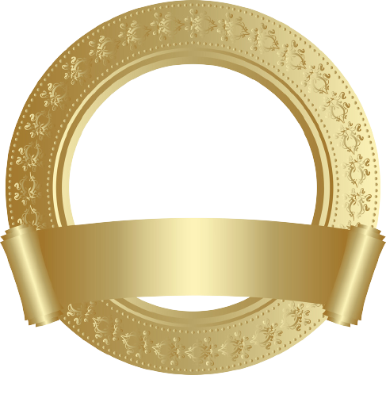
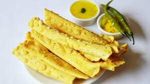
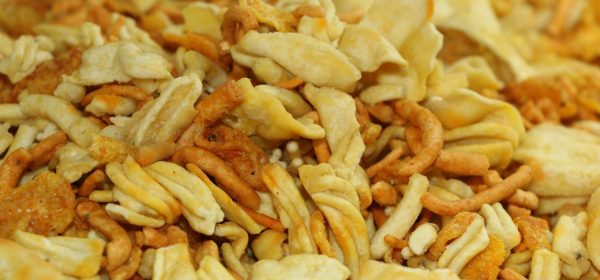
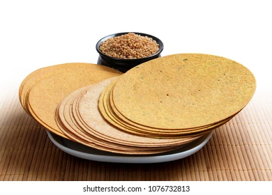
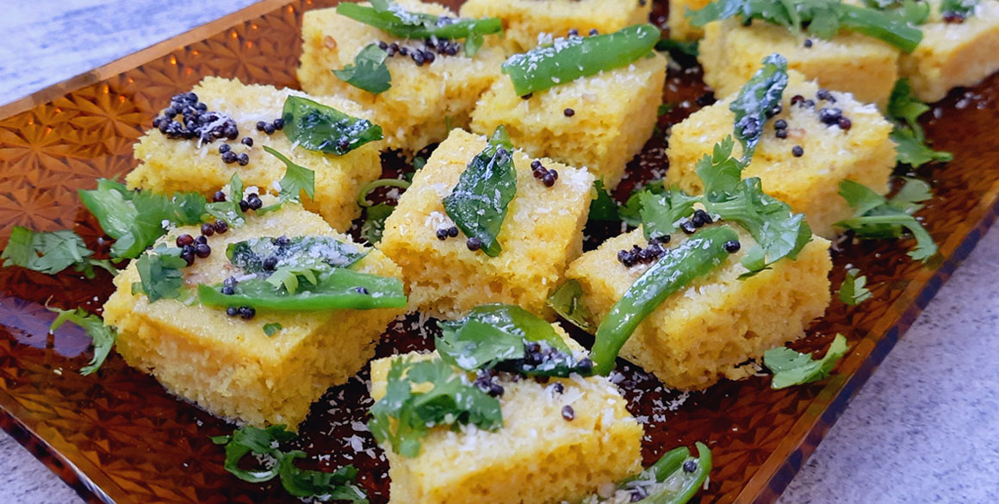
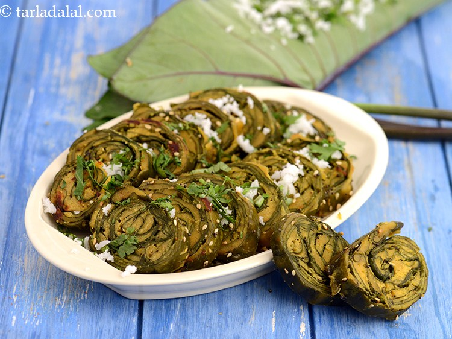
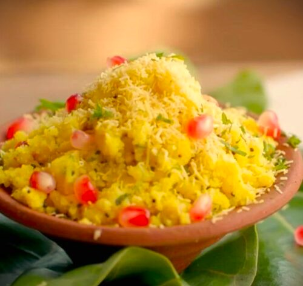

FARSAN.FOOD

FARSAN:
Farsan forms a significant part of Gujarati cuisine. In his book, 'A Historical Dictionary of Indian Food' , Food Historian and writer, K.T Achaya describes farsan as a "class of Gujarati snacks along with Nasto, consisting of items that can be eaten as a snack or as a part of major meal."
Farsan is also found throughout the rest of India, particularly Maharashtra due to the influx of Gujarati and Rajasthani traders and migration of Sindhis in Mumba
TYPES OF FARSAN / FOOD:
generally in gujrat....
- FAFDA
- GATHIYA
- KHAKHRA
- DHOKLA
- KHMAN
- KHANDVI
- PATRA
- SEV-KHMANI

When the Fafda are freshly fried and kept to cool down a little, they look like a golden version of cinnamon sticks. In Gujarat, this is served as a snack with a sweet yellow sauce. The Fafda is made of a chickpea flour, bishop’s weed and salt dough. This mixture is thinly spread on a wooden plank, scraped and fried.

This is like a denser and heavier version of Fafda. The dough to make this Farsan is quite similar to that of the Fafda. Gathiya is an all time evening munch-on for any Gujarati household. You’ll always find a bowl of this with piping hot tea if you visit a local home.

Thin, crisp crackers made with wheat flour and oil. This treat comes from the Jain Gujarati cuisine. These thin discs are hand made on flat skillets and have a variety of flavours. You can enjoy them with pickles, chutney and a hot cup of tea is perfect for a cool spring evening or just any other day. It also serves as a quick and filling grab and go breakfast.

The best thing about this is that it’s steamed and is a delight for the health conscious. The Dhokla so are tempered with curry leaves, chillies and mustard seeds. This goodness becomes an instant favourite among everyone.

This snack is mistaken for Dhokla and vice versa a lot of times. The difference? Khaman is more soft and spongy as compared to the dense dhokla. Khaman is prepared with soaked and freshly ground gram flour (besan). This tea time delight is garnished with popped mustard seeds, chopped coriander leaves and grated coconut.

These little thin rolls of goodness is my personal favourite of all Gujarati snacks. Every time I visit a farsan shop, I make sure I get my share of Khandvi packed. They don’t have a distinctive taste but the smooth almost jelly texture accompanied by raw papaya slaw and a sweet and sour dip will leave you asking for more, a lot more.t Surely doesn’t taste like one. Patras have a lot of distinct flavours packed in the stuffing. The green thing used to roll the filling in, are Colocasia leaves. A tadka of mustard seeds is a must. Enjoy slices of them with any chutney you like and the Gujarati special masala tea.

It Surely doesn’t taste like one. Patras have a lot of distinct flavours packed in the stuffing. The green thing used to roll the filling in, are Colocasia leaves. A tadka of mustard seeds is a must. Enjoy slices of them with any chutney you like and the Gujarati special masala tea.

This is the most favoured snack or breakfast in the Surat region of Gujarat. It is made by crumbling Khaman pieces which make the base of the snack and is topped with sev, pomegranate, grated coconut and toasted nuts. Khamni is light yet quiet filling and is enjoyed with a spicy mint chutney.
Welcome to this site, We're dedicated to giving you the very best of information of FARSAN & FOOD. A very warm welcome to you! It is lovely to have you among us! It is our great pleasure to have you on board!